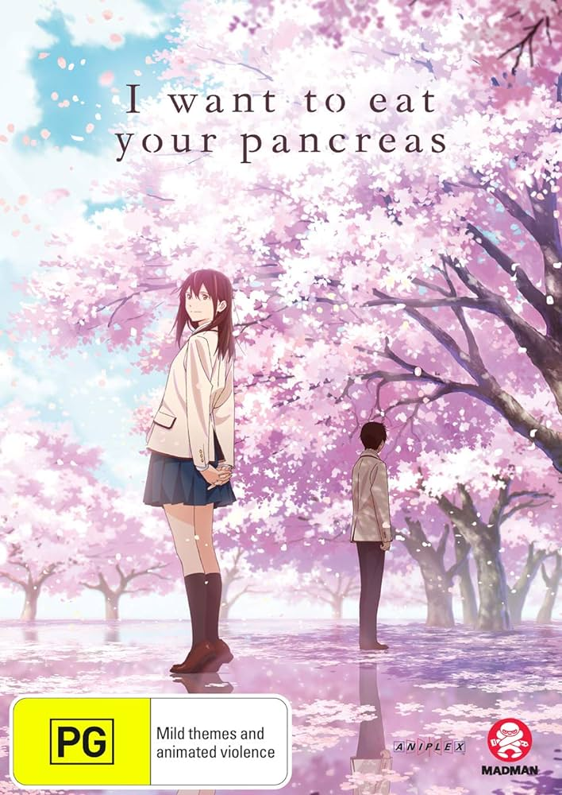

Novela ligera escrita por Yoru Sumino y publicada en 2015.
Editorial: Futabasha

Reseña:
La película es una hermosa y conmovedora exploración de
lo que significa vivir plenamente, contada desde la perspectiva de un
chico emocionalmente distante cuya vida cambia al conocer a una chica
con una enfermedad terminal. Aunque la premisa de “chica enferma ayuda
al chico distante a ver la belleza de la vida” no es original, la
relación central y la forma en que todo concluye hacen de esta
película una poderosa historia de crecimiento personal que celebra la
vida frente a la muerte.
La personalidad extrovertida y llena de vida de Sakura contrasta con
la del chico, quien inicialmente es retraído. Aunque a veces la
actitud optimista de Sakura puede resultar un poco exagerada, refleja
cómo alguien enfrenta su propia mortalidad. La película, sin embargo,
podría haber sido más sutil en su entrega, ya que algunos diálogos son
demasiado directos. A pesar de esto, el final es satisfactorio y
emocional, reforzando el mensaje central de la película.
En resumen, “I Want to Eat Your Pancreas” es una película que celebra
la vida y te dejará conmovido hasta las lágrimas.
Calificación: ★★★★☆